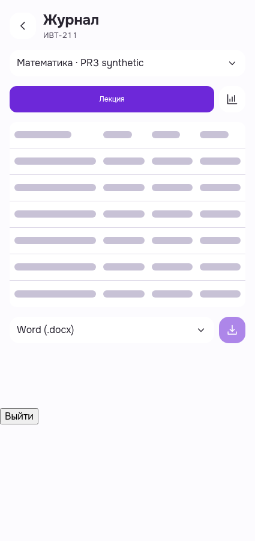
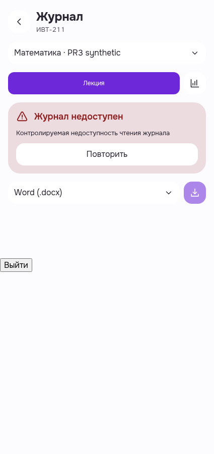
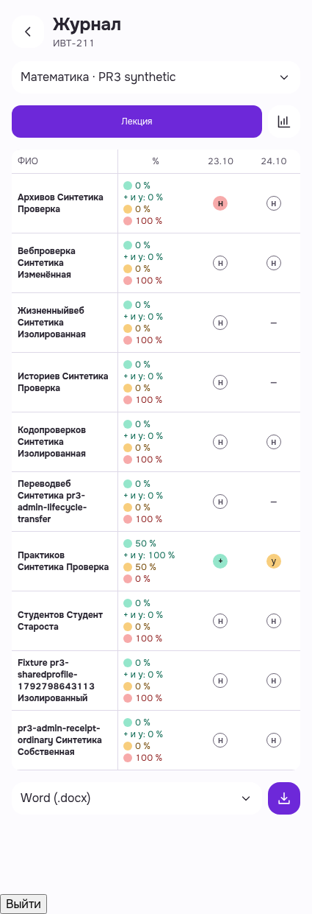
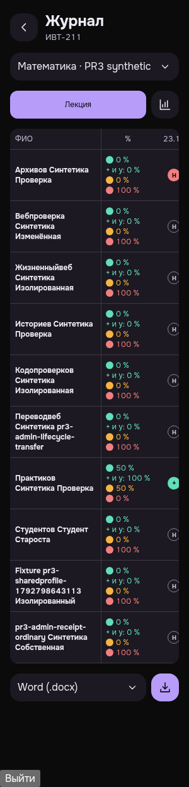

Журнал: loading и локальное восстановление
Четыре after-кадра изменённого журнала, d69. HeldGET и одна503 — синтетический presentation stimulus; обычный Teacher2 Auth и retry200/data реальные. Лично просмотрены все4 PNG. Technical exact-own selfDELETE204/same-bearer401, browser closed; native UI logout не перепроверялся. Нет нового TMA provider/всехсостояний PASS.
Критерии/ограничения/cleanup · Manifest · Raw receipt · Сохранённые before/raw6
Журнал · skeleton · light · 425
Реальный journal GET удержан в браузере для кадра. Статический скелетон таблицы, читаемый header/toolbar; строка загрузки доступна assistive technology. Затем тот же перехваченный запрос получает одну синтетическую503.
Строки и короткие ячейки скелетона соответствуют форме журнала; лишней видимой подписи и горизонтального переполнения нет.
PWA-MOBILE-TEACHERJOURNAL__MB-TJ-AF01-after-held-get-skeleton__light__425__d69ac9159
revision d69ac9159e3bfff169c4b2bd25adbcc7d9def771
SHA256 fc5e8d7f5c284265da18d066715133b2b65f99fa7183e1ea5443d1fad5770508

Журнал · локальная503 · light · 425
Одна явно синтетическая503 для presentation/recovery проверки. Одна локальная ошибка «Журнал недоступен» с «Повторить»; общий duplicate-banner отсутствует. Auth/backend для остальных операций реальные.
Локальная карточка ошибки и кнопка retry читаемы; второго host warning нет.
PWA-MOBILE-TEACHERJOURNAL__MB-TJ-AF02-after-local-controlled-503__light__425__d69ac9159
revision d69ac9159e3bfff169c4b2bd25adbcc7d9def771
SHA256 33e1b0b3fdaf3b0c58768f0707fab164de7799201b68adf1251c627f6102c348

Журнал · retry actual200 · light · 425
Обычная UI-кнопка «Повторить» отправила тот же URL и получила реальный200. Реальная таблица журнала восстановилась, локальное и прежнее глобальное предупреждения отсутствуют.
Заголовки, имена и метрики читаемы; таблица заполнена, старого предупреждения внизу страницы нет.
PWA-MOBILE-TEACHERJOURNAL__MB-TJ-AF03-after-native-retry-real200__light__425__d69ac9159
revision d69ac9159e3bfff169c4b2bd25adbcc7d9def771
SHA256 11607c7bfbf9b16e903cc9dc9fa4e8f14f4111cb4280cf1f288eeb118ee83aac

Журнал · восстановлен · dark · 300
Тот же реальный восстановленный journal-query после200; OS media dark. Нет повторного Auth/запроса ради темы. Внешняя страница не переполняется; таблица имеет штатную локальную область горизонтальной прокрутки.
Dark surface/контраст и toolbar читаемы; глобального предупреждения нет. Даты выходят за локальную область таблицы: фактический scroll/drag в этом пакете не проверялся.
PWA-MOBILE-TEACHERJOURNAL__MB-TJ-AF04-after-same-query-recovered__dark__300__d69ac9159
revision d69ac9159e3bfff169c4b2bd25adbcc7d9def771
SHA256 7d93570ebbbdb475158949de6cd59aab5c51c441f92273e57de5893178e7dc30
